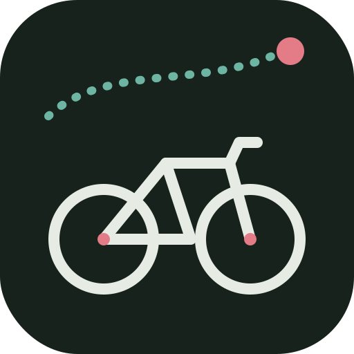

Connexion…
Change ton mot de passe de connexion.
Source : intervals.icu
Dans intervals.icu : Settings → Developer Settings, copie ta clé API et ton identifiant athlète (ex. i123456). La clé reste côté serveur, elle n'est jamais réaffichée.